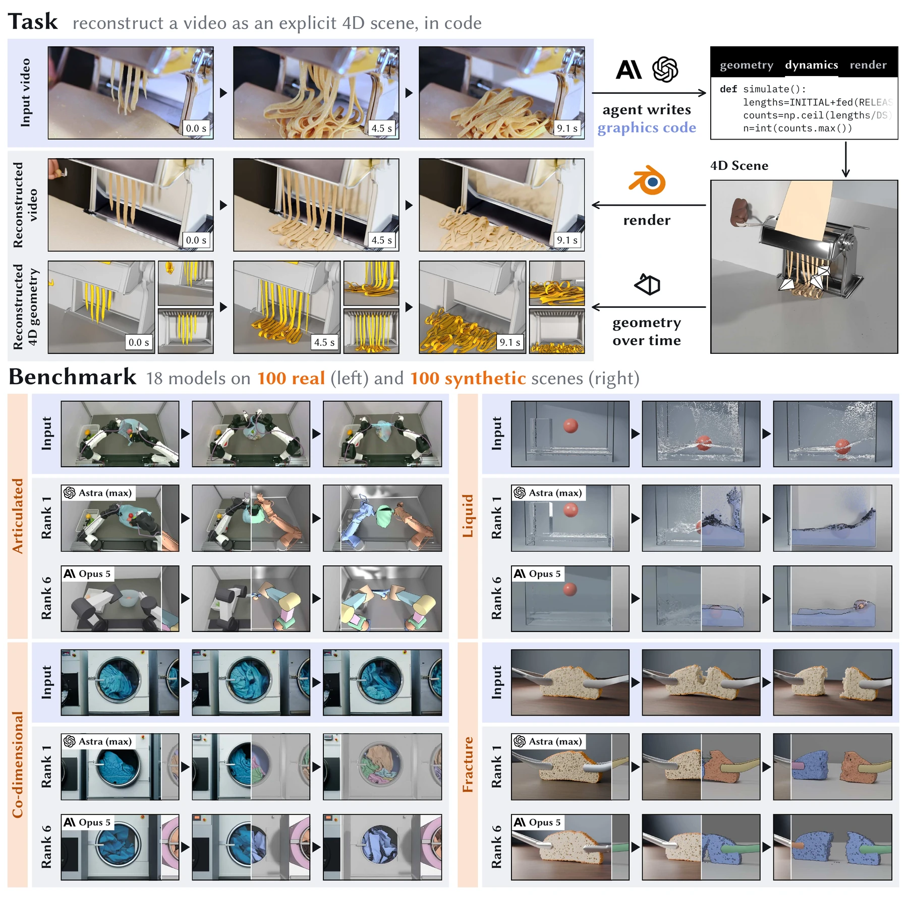
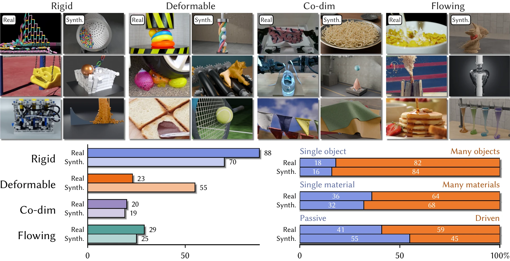

4DCodeBench: Benchmarking Agents on Inverse Graphics of Dynamic Scenes
- Paper4DCodeBench: Benchmarking Agents on Inverse Graphics of Dynamic Scenes
- AuthorsRuihong Shen, Žiga Kovačič, Peter Kulits, Xingrui Wang, Zizhang Li, Joshua B. Tenenbaum, Alan Yuille, Jieneng Chen, Jiajun Wu
- FromJohns Hopkins University, Stanford University, Max Planck Institute for Intelligent Systems, Massachusetts Institute of Technology
- arXivarXiv:2610.03715 (cs.CV), October 2026
- LinksProject page · Code
Inverse graphics usually fits a fixed model to what a camera sees. 4DCodeBench asks for an executable graphics program instead, so the program itself decides what geometry to build and how to represent it. Dynamic scenes make these choices matter: flow, fracture and deformation change an object's shape and often its topology, and materials act on each other. The paper asks how well multimodal coding agents understand such dynamics from a video when they choose and implement their own abstractions.


The task
Given a reference video, an agent writes code that builds the scene's 3D geometry and its evolution over time, and renders it in Blender at the video's resolution, frame count and frame rate. The code must run without the reference video. How the dynamics are made is left open: keyframed, or simulated with any tool, such as Taichi or Warp, so the agent's choices are themselves part of what is studied.
The data
There are 200 scenes: 100 real videos, curated from existing datasets and the web, and 100 synthetic scenes built with physics simulators. Real videos bring real appearance and complex dynamics but no 4D ground truth; synthetic scenes give the geometry and motion at every frame. Scenes are grouped by the matter of their main moving objects: rigid and articulated, deformable solids, co-dimensional (cloth, rope) and flowing (grains, fluids). 83% of the scenes have several moving objects and 66% several materials.


How it is scored
Five families of metrics, each from 0 to 1: Perceptual (DINOv3 similarity to the reference video), 2D Dynamics (the dynamic IoU of moving objects, and on real videos optical flow and point tracks), 2.5D Geometry (depth, on real videos), and on synthetic scenes 3D Geometry (Chamfer distance at the first frame) and 3D Dynamics (paths of matter over time, and frame-to-frame displacements). Overall is their mean; a failed run gets the worst score. A vision-language model also answers scene-specific questions about each reconstruction and compares pairs of them.
What the paper found
The authors evaluate 18 models on all 200 scenes. Across all of them, appearance and static geometry score higher on average than dynamics: even the strongest, GPT-6 Astra [Max], scores 0.91 on the static families and 0.67 on the dynamic ones. The automated rankings agree with people: over 3,587 pairwise judgments from 76 participants, human and model-judge ratings correlate with Spearman ρ = 0.980. 90.1% of submissions run fully, more tokens do not consistently give better reconstructions, and leading models take different routes, from mostly analytic motion to custom physical simulations. The authors note that the scores reward fidelity, so prescribed trajectories can score well.
Run it in Real2SimLab
Real2SimLab fetches the code and the data at pinned versions and runs the official scorer unchanged, which reports the dynamic IoU. It can also re-run the frozen program offline first and score the world it builds again, a check the official protocol does not make.
r2s bench build fourdcodebench --out tasks/ r2s eval --tasks tasks/synthetic --method codex:image=4dcb/agent:dev --out runs/4dcb
More in the documentation.